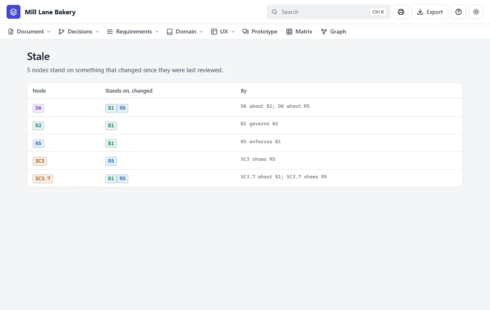
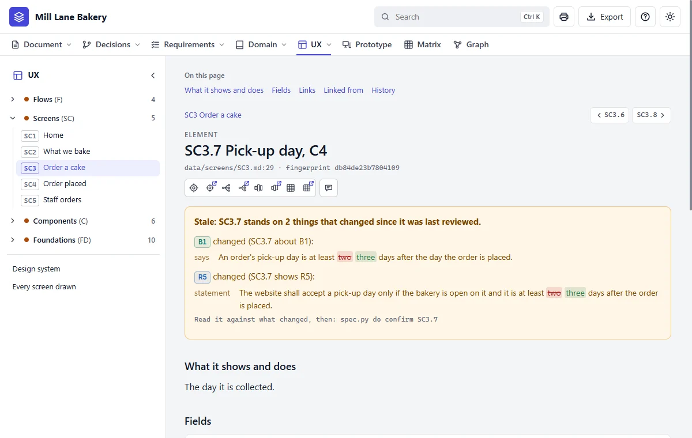

Change something
Ask first
Two days' notice is too tight at Christmas. What would it take to make it three?
Claude asks what depends on the rule before touching anything:
B1 Notice (rule)
stands on: governs N2
stale at once if it changes (4):
D6 Two days' notice -- D6 about B1
N2 Order -- B1 governs N2
R5 Pick-up days the bakery can do -- R5 enforces B1
SC3.7 Pick-up day, C4 -- SC3.7 about B1Then change it
Yes, make it three.
Claude changes the rule and the requirement that enforces it. Everything standing on them goes stale: not wrong, just needing someone to read it again. Here, 4 nodes went stale, then 6: the flow that tells the requirement among them, for a flow carries the requirements its steps name.


Read what went stale
Claude reads each one and changes what needs changing. Some need nothing. Then it confirms it: that's its word that someone read it. Because the strings can't reach words inside a drawing, the Order a cake screen is listed separately as a prototype to look at. It says "Two days' notice", so it's redrawn.